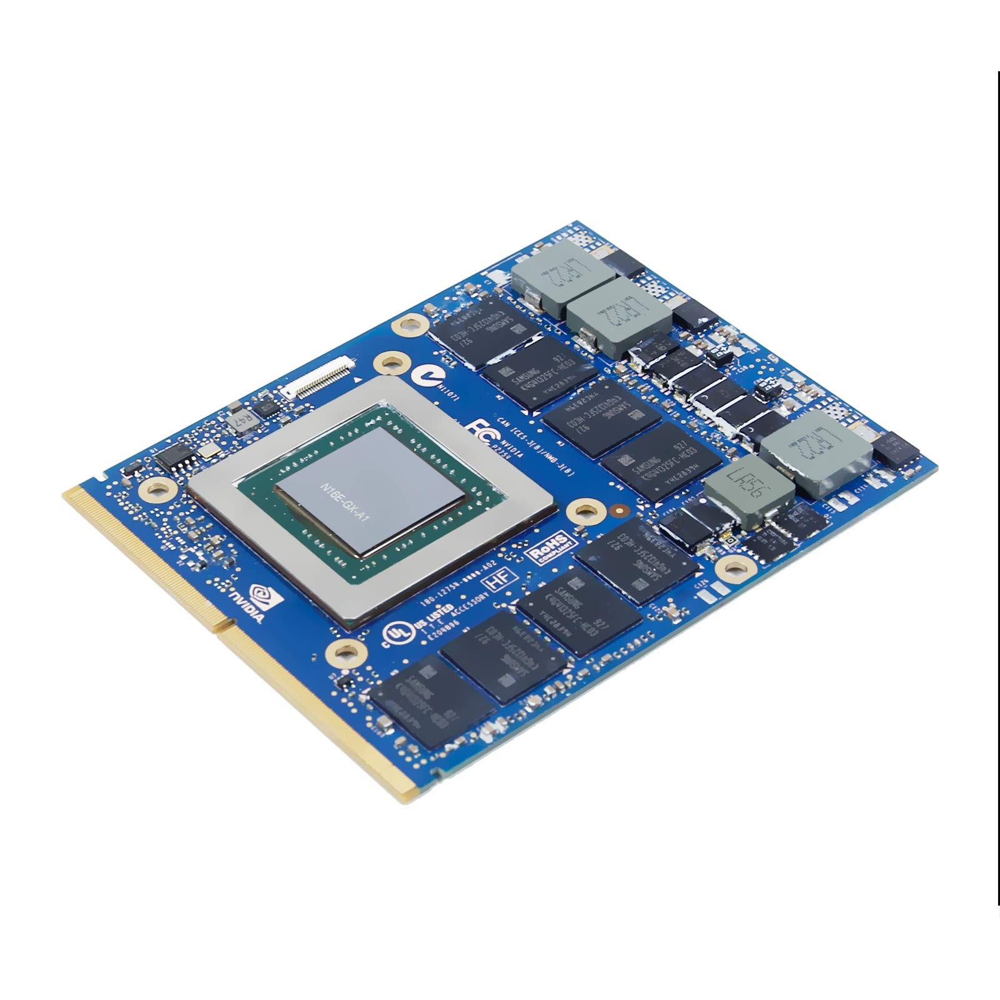

| ¿Qué es una tarjeta gráfica? | |
|  |
Junto al procesador, podemos decir que es el componente "más importante", más que nada por el trabajo que hace. En el inicio de los ordenadores conforme las interfaces gráficas y los videojuegos iban evolucionando, renderizar gráficos se volvió muy pesado para las CPUs, que tenían que hacer todo el trabajo. Por esto se inventaro las tarjetas aceleradoras de gráficos 2D, y más tarde de 3D, que obviamente eran mucho más limitadas que las de ahora, además de usar otros conectores.
Actualmente, las GPUs son un dispositivo potentísimo: se especializan en realizar muchas tareas de forma paralela gracias a su gran cantidad de núcleos, que dependiendo del fabricante y la gama suele alcanzar facilmente los 1000 núcleos solo para rasterización. |
| ¿Que partes conforman la tarjeta gráfica? | |
|
En esencia, la fabricación no difiere mucho de la de una CPU al ser también de chips de silicio cuando nos referimos a la unidad de procesamiento gráfico (GPU), que no es lo mismo que una tarjeta gráfica. Una tarjeta gráfica se conforma de muchos componentes a parte de el chip gráfico, como el VRM (incluyendo los capacitores, mosfets y demás), la VRAM, tomas de corriente, el puerto PCIe y los de salida de vídeo. Todo eso sería lo más destacable de la placa, y luego además tenemos el embellecedor con su sistema de disipación, que como curiosidad, en las gráficas más antiguas ni siquiera había, y cuando empezaron a aparecer o se basaban en disipación pasiva o tenían ventiladores pero con disipadores de plástico. Obviamente todo esto ha ido cambiado conforme estás gráficas son cada vez más potentes. |

|
| · VRM |
|
EL VRM es el regulador de voltaje, presente en prácticamente cualquier aparato electrónico. Como su nombre indica, se encarga de dar el voltaje correcto de forma estable y sin interrupciones. En un PC lo podemos ver principalmente en la GPU y en la placa base, alrededor de la CPU. El VRM se conforma de cinco partes: - el condensador, que son esa especie de tubos grises - los mosfets, que son los chips que suelen estar al lado de los condensadores - los controladores PWM, otro chip más pequeño - los chokes, una pieza de metal con una especie de muesca en medio |

| · VRAM |
|
La tarjeta (siempre que sea dedicada) cuenta con memoria VRAM integrada que ayuda a almacenar cosas como texturas y demás en una memoria propia y especializada en esos trabajos, en vez de usar la RAM convencional de forma compartida (como es el caso de las gráficas integradas). |

|
Cuando juegas a videojuegos, por ejemplo, la VRAM se convierte en el lugar donde tu tarjeta gráfica almacena temporalmente todas las imágenes y elementos visuales necesarios para crear la experiencia visual que ves. Si estás explorando un mundo virtual expansivo, la VRAM guarda las texturas de los paisajes, los modelos 3D de los personajes y cualquier efecto visual que haga que el juego sea asombroso. Ahora, hablemos de cantidad. La cantidad que tenga afecta directamente la calidad y complejidad de lo que ves en pantalla. Si tu tarjeta gráfica tiene más VRAM, puede manejar información visual más grande y detallada. Esto es crucial en juegos modernos, donde las texturas son cada vez más detalladas y los entornos virtuales son cada vez más inmersivos. Actualmente se le culpa a Nvidia de no poner suficiente VRAM en sus tarjetas gráficas teniendo en cuenta al gaming, ya que al contrario que AMD son poco generosos en este aspecto. Aunque si nos ponemos críticos, el problema realmente es de que muchas desarrolladoras han lanzado estos últimos años juegos mal optimizados que consumen demasiada VRAM, como el tan sonado caso de The Last of US parte 1. Actualmente si quieres jugar juegos AAA actuales con 8GB de VRAM te puedes quedar corto siempre y cuando juegues con ajustes gráficos altos. |